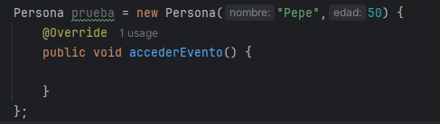

Las clases anónimas en Java son como clases normales, pero sin nombre. Se usan cuando necesitamos una clase "de usar y tirar", generalmente para implementar una interfaz o extender una clase existente rápidamente. Haremos uso de ellas cuando necesitemos una funcionalidad específica y no queremos crear una clase separada sólo para eso. Por ejemplo, al usar listeners (escuchas) en interfaces gráficas o para pequeñas tareas puntuales.
Imagina que tienes una interfaz llamada Saludo así:
interface Saludo {
void decirHola();
}
Podrías hacer esto con una clase normal:
class SaludoEspanol implements Saludo {
public void decirHola() {
System.out.println("¡Hola!");
}
}
Y luego usarla así:
Saludo saludo = new SaludoEspanol();
saludo.decirHola();
Pero con una clase anónima, nos ahorramos crear SaludoEspanol y lo podemos implementar en una sola línea:
Saludo saludo = new Saludo() {
@Override
public void decirHola() {
System.out.println("¡Hola!");
}
};
saludo.decirHola();
¡¿Qué ha pasado ahí!
- Pues para empezar, esta clase no tiene nombre: no hay class SaludoEspanol. La clase se ha creado e implementado Saludo directamente en el momento de la declaración.
- Se ha usado una sola vez: esto es ideal si no vamos a reutilizar nunca más esa implementación.
- Hemos sobrescrito el método decirHola() ahí mismo.
NOTA: Fíjate que es lo mismo que nos recomienda hacer IntelliJ IDEA cuando intentamos instanciar un objeto del tipo de una clase abstracta:

Las clases anónimas en Java también se pueden usar sin interfaz, extendiendo una clase existente. Básicamente, podemos crear una versión "rápida" de una clase y modificar su comportamiento sobre la marcha.
Imagina que tienes una clase Vehículo así:
class Vehiculo {
void hacerSonido() {
System.out.println("Brrrrrrrr");
}
}
Si quisieras crear una versión específica (por ejemplo, para un tren), podrías hacerlo con una clase anónima así:
Vehiculo tren = new Vehiculo() {
@Override
void hacerSonido() {
System.out.println("Chucu chucu");
}
};
tren.hacerSonido();
No hay una clase como Tren, sólo se usa aquí y ya.
¿Cuándo no usarlas?
- Cuando necesitamos usar la misma lógica en varios lugares (mejor crear una clase normal).
- Si la lógica a implementar es muy compleja se vuelve confuso (mejor hacerlo más claro con una clase normal).